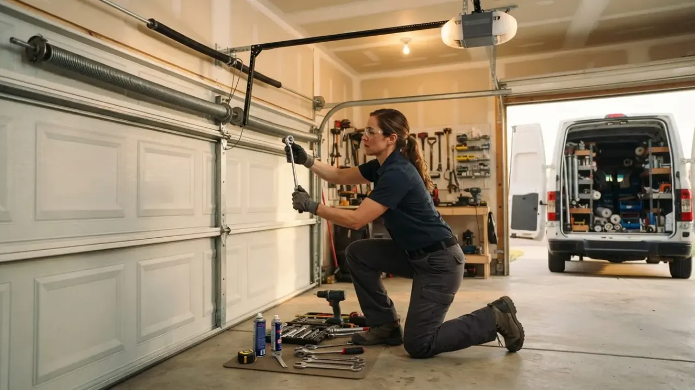

Your local Historic Ybor garage door repair team
Garage door repair in Historic Ybor Done Right the First Time
When your garage door jams halfway open on Seventh Avenue, you need garage door repair in Historic Ybor that shows up the same day. We work the brick streets of Ybor City, V.M. Ybor, and East Ybor every week, fixing torsion springs, snapped cables, and dead openers on older garage structures. One call, one visit, door working again.
24/7 dispatchHistoric Ybor ZIP codesResidential & commercial
Local system knowledge
Local garage door repair in Historic Ybor
Garage door repair in Historic Ybor is the trade of keeping doors moving in a district where 100-year-old brick buildings sit next to new townhomes and busy commercial bays. We serve Historic Ybor, V.M. Ybor, Ybor City, and East Ybor, plus the 33605 ZIP that covers them. The mix here is unusual: narrow alleys off Seventh Avenue, detached garages behind bungalows, and loading doors that run all day. Humidity and salt air off the bay work on steel cables and springs year-round, so we stock galvanized steel cables, torsion springs, and nylon garage door rollers on every truck. Whether you need a spring swapped before a weekend rush or a full opener replacement, we handle it. We are a garage door contractor and we pull Tampa building permit compliance when a job requires it. Licence number available on request.
Explore Historic Ybor services
garage door repairs Tampa FlHistoric Ybor has a commercial and residential mix that most Tampa neighborhoods do not. On any given week we might replace a broken torsion spring on a bungalow near Centro Ybor in the morning and repair a rolling steel door at a warehouse on the edge of East Ybor by afternoon. The older garage structures here were not built for modern openers, so we see a lot of retrofit work: reinforcing tracks, swapping extension springs for torsion systems, and adding photo eye sensors that meet UL 325. High foot traffic near Seventh Avenue also means doors get used hard, and we keep our schedule open for same-day calls in 33605.
Services available in Historic Ybor
Garage door repair services Historic Ybor
If you are searching for garage door repair near me Historic Ybor, here is what we actually do in the neighborhood. We handle residential and light commercial doors: torsion and extension springs, cables, rollers, tracks, hinges, panels, openers, remotes, keypads, and sensors. We also install new doors and smart openers. Most jobs in 33605 are finished in one visit because we carry the common parts for LiftMaster, Chamberlain, Genie, and Craftsman systems on the truck.
01
Garage Door Repair
General garage door repair in Historic Ybor covers everything from a door that will not close to a snapped cable. We work on detached garages behind bungalows in V.M. Ybor and commercial bays near Seventh Avenue. Most repairs take two to four hours and we test the door through three full cycles before we leave.
02Garage Door Spring Repair
Broken torsion springs are the number one call we get in Historic Ybor. We replace springs with matched pairs, use proper winding bars, and set tension with a torque wrench. If your door slammed down or will not lift, call us. We stock springs for standard 7-foot and 8-foot doors and can usually finish the same day.
03Garage Door Opener Repair
Openers in Ybor take a beating from humidity and heat. We repair LiftMaster, Chamberlain, Genie, Craftsman, Linear, and Marantec units, replacing opener gears, logic boards, and remotes. If your opener runs but the door does not move, that is usually a stripped gear or a broken spring, and we diagnose both on the same visit.
04Garage Door Cable Repair
Salt air and humidity rust galvanized steel cables faster here than inland. When a cable snaps, the door can drop crooked or come off track. We replace both cables as a pair, inspect the cable drums and winding cones, and rebalance the door. Most cable repairs in Historic Ybor are done in under three hours.
05Garage Door Panel Repair
Dented panels are common on doors facing alleys and streets with high foot traffic. We repair or replace individual panels on Clopay, Amarr, and Wayne Dalton doors, matching profile and color where possible. If the panel is beyond repair, we can order a replacement and install it without replacing the whole door.
06Garage Door Roller Repair
Noisy garage door rollers are a daily complaint in older Ybor garages. We replace worn steel rollers with nylon garage door rollers that run quieter and resist humidity. We also check the roller removal tool alignment on the track and replace any bent hinges at the same time. Most roller jobs take about 90 minutes.
More than a service list
How we execute garage door repair in Historic Ybor
Working in Historic Ybor means planning around narrow streets, alley access, and buildings that were not designed for modern garage doors. When we schedule a job, we ask about parking and access, because some blocks off
Narrow alleys and limited parking near Seventh Avenue
Getting a service truck close to the garage can be tricky, and some jobs require carrying tools and parts on foot. This adds time to the visit and means we plan the route before we arrive. How we help: We ask about access when you book and bring a hand truck and compact tool bags for tight spots. If the alley is blocked, we find the nearest legal parking and walk the parts in. We also schedule around peak foot traffic hours when possible.
Older garage structures not built for modern openers
Many detached garages in V.M. Ybor and East Ybor have low headroom, weak framing, or no power. Standard openers may not fit without modifications, and the door itself may need reinforcement. How we help: We measure headroom and check the framing before recommending an opener. If needed, we reinforce the header or install a low-profile unit. We also run a dedicated circuit if the garage has no power, and we make sure the install meets UL 325.
Humidity and salt air accelerating rust
Galvanized steel cables, springs, and steel rollers rust faster here than inland. A door that would last 10 years in a dry climate may need cable replacement in five or six. Rust also causes rollers to seize and springs to snap. How we help: We use galvanized cables and apply a garage door lubricant that resists moisture. We recommend nylon garage door rollers instead of steel, and we suggest a maintenance visit twice a year. On repairs, we inspect the whole system for rust, not just the broken part.
Early warning signs
Signs you need garage door repair in Historic Ybor
A small visible symptom can point to a bigger pattern.
Door is noisy when opening or closing
Door is noisy when opening or closing
Door opens unevenly or looks crooked
Door opens unevenly or looks crooked
Opener runs but door does not move
Opener runs but door does not move
Safety sensors are blinking
Safety sensors are blinking
Clear starting points
Garage door repair pricing in Historic Ybor
Typical 2026 pricing for garage door repair in Historic Ybor runs from $180 to $450 for common repairs like springs, cables, and rollers. Opener repairs are usually $150 to $350, and a new opener installed runs $400 to $800. Emergency calls after hours may have a higher rate. We give you a price before we start, and we do not charge for the estimate. If you are looking for affordable garage door repair in Historic Ybor, we will tell you honestly whether a repair or replacement makes more sense.
Type of repair
Simple fixes like a sensor alignment or remote reprogramming cost less, usually under $150. Spring and cable replacements are more involved and run $250 to $450. Opener replacements are higher because of the equipment cost.
Door size and weight
A standard 7-foot single-car door is cheaper to repair than a 16-foot double door or a heavy commercial door. Larger doors need heavier springs and more time, which affects the labor cost.
After-hours or emergency
Calls outside normal business hours, including nights and weekends, may have an emergency rate. We tell you the rate before we dispatch, so there are no surprises.
We know the route
Landmarks we use to navigate Historic Ybor
Historic Ybor is a compact district, but the one-way streets and pedestrian zones can slow you down if you do not know them. We use landmarks like Centro Ybor and the Tampa Bay Brewing Company as orientation points when we route our trucks. Seventh Avenue is the main spine, and most of our calls are within a few blocks of it. Knowing where the alleys connect saves us time and gets us to your door faster.
Ybor City Historic District
The historic district designation covers much of our service area. Knowing the boundaries helps us plan routes and identify buildings that may have permit requirements for door replacements.
Centro Ybor
Centro Ybor is a central reference point on Seventh Avenue. We use it to orient ourselves when navigating to addresses on the surrounding blocks, especially during busy weekend foot traffic.
Tampa Bay Brewing Company
Located on Seventh Avenue, this is a useful landmark for finding addresses in the eastern part of the district. It helps us route to nearby residential streets and alleys.
Seventh Avenue
Seventh Avenue is the main commercial spine of Historic Ybor. Most of our calls are within a few blocks of it, and we use the cross streets to plan our approach and parking.
Historic Ybor service coverage
Is your ZIP on the route?
These are our most frequently served ZIP codes. Nearby areas may also qualify — call if you do not see yours.
Popular neighborhoods: Historic Ybor · V.M. Ybor · Ybor City · East Ybor
Check my address →
1234
Primary Historic Ybor response zoneSame-day response depends on current call volume, technician availability, and required equipment.
Reviews from Historic Ybor customers
What Historic Ybor customers say
★★★★★
“Our garage door spring broke on a Saturday morning and we could not get the car out. I called and they were here by early afternoon. The technician replaced both springs, lubricated everything, and showed me how to test the safety reverse. Fair price, no upsell. I will use them again for our rental property.”
★★★★★
“We manage a building on Seventh Avenue with a loading door that gets abused. They came out same day when the cable snapped, replaced both cables, and adjusted the track. The door runs smoother than it has in years. They even scheduled quarterly maintenance so we do not have to think about it.”
★★★★★
“Our opener died and we thought we needed a whole new system. They diagnosed a bad gear and repaired it instead of replacing the opener. Saved us a few hundred dollars. The tech was on time, clean, and explained what he did. Good honest service in Ybor.”
Outside Historic Ybor?
Nearby cities we serve from Historic Ybor

Downtown Tampa
Just west of Historic Ybor, about 10 minutes away. Many of our customers live downtown and work in Ybor, so we serve both.
Channelside
South of Historic Ybor, about 10 to 15 minutes. Channelside has a mix of condos and commercial buildings with garage doors we service.
Hyde Park
Southwest of Historic Ybor, about 15 to 20 minutes. Hyde Park's older homes often have detached garages that need spring and opener work.Historic Ybor garage door repair local notes
Local Notes for Historic Ybor
Historic Ybor is one of Tampa's older neighbourhoods in Hillsborough County, with many historic homes and older garages that were not built for today's wider, heavier doors.
Historic Ybor is part of the Ybor City National Historic Landmark District, and its older brick buildings and narrow streets can make access tight for a full-size service van.
Heat and humidity wear on springs and opener electronics all year, and older doors often need a balance check before a new opener will work properly.
When a hurricane is forecast, reinforcing the door and disconnecting the opener before the storm can keep a bad night from turning into a door stuck open.
Historic Ybor garage door repair FAQ
FAQs about garage door repair in Historic Ybor
A real dispatcher is available if your question is not answered here.
Call +1 (773) 915-6384How much does garage door repair cost in Historic Ybor?
Most garage door repairs in Historic Ybor cost between $180 and $450 in 2026. A simple sensor alignment or remote fix is often under $150. Spring and cable replacements run $250 to $450. Opener repairs are $150 to $350, and a new opener installed is $400 to $800. We give you a firm price before we start, and there is no charge for the estimate.
Who is the best garage door repair company in Historic Ybor?
The best company is the one that shows up on time, gives you a clear price, and fixes the door right the first time. Look for a Florida licensed contractor with local experience in 33605, a warranty on parts and labor, and real reviews from Ybor customers. We are proud of our 4.8 rating from 6 verified customer reviews and our same-day service, but we encourage you to check reviews and license status for any company you hire.
Is there 24/7 garage door repair in Historic Ybor?
Yes, we offer 24/7 emergency garage door repair in Historic Ybor. If your door is stuck open, off track, or will not close, call us any time, including nights and holidays. We prioritize doors that leave your building exposed or unsafe. We will give you a realistic arrival window and an after-hours rate before we dispatch.
How do I choose a garage door repair service in Historic Ybor?
Start by asking if they are licensed and insured in Florida. Then ask if they carry parts for your door and opener brand, how they price jobs, and what warranty they offer. A local company that knows Ybor's older garages and narrow alleys will often do a better job than a franchise. Read reviews from customers in 33605 and trust your gut.
Do you offer emergency garage door repair in Historic Ybor?
Yes, we offer emergency garage door repair in Historic Ybor 24 hours a day. Common emergencies include a door stuck open, a snapped cable, or a door off track. We carry common parts on our trucks, so many emergencies are fixed on the first visit. Call us and we will tell you how soon we can be there.
Historic Ybor dispatch is ready
Need garage door repair Tampa? Call now
A door that will not close is a security risk, and a snapped spring only gets worse. We answer 24/7, quote before we start, and carry the parts to finish most jobs the same day. Call and we will get a truck moving.
Talk with the local team
Request Historic Ybor service
Call, text or email and a real person answers, day or night. Tell us what the door is doing and we will give you a price range on the spot plus the soonest arrival window. Most calls placed before mid-afternoon get a same-day visit anywhere in Hillsborough County.